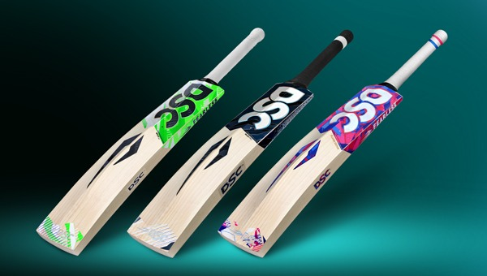
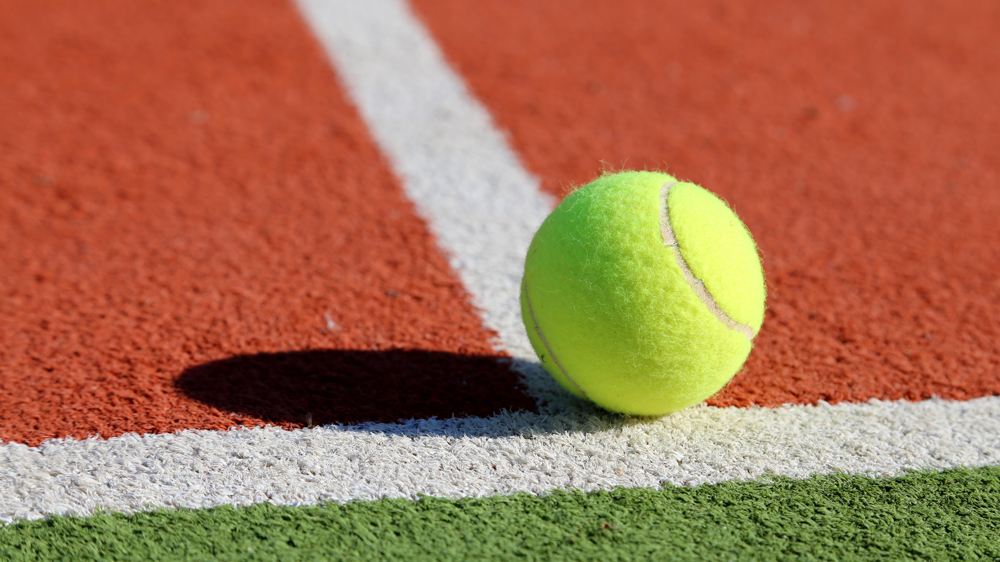
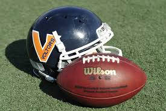
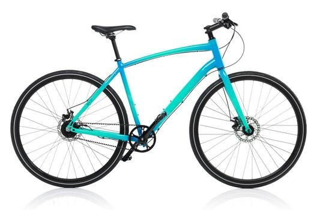
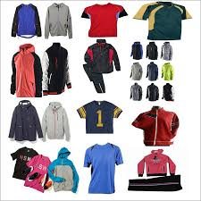

|
 CRICKET BAT |
CRICKET BAT
Material:The product shown in the image is a *cricket bat* manufactured by the brand *DSC. A cricket bat is used by players to hit the ball in the sport of cricket. The main part of the bat, called the blade, is typically made from **English willow or Kashmir willow, which are strong yet lightweight woods suitable for powerful shots. The **handle* is usually made from *cane* and reinforced with rubber strips to absorb shock and reduce vibration when the ball hits the bat. The handle is covered with a *rubber grip* to provide better control and comfort for the player. Some bats also have a *protective fiber sheet or anti-scuff cover* on the blade to prevent damage. These materials together make the bat durable, balanced, and effective for playing cricket. 🏏
Finish: Tarnish-resistant coating for easy maintenance |
|
|
 BALLS |
BALLS
Material: . The tennis balls are made of rubber and covered with a felt material that helps control speed and bounce, and they are used with a tennis racket, which has a metal or graphite frame with tightly strung nylon or polyester strings. The American football is typically made from leather or composite material and has laces to provide a better grip for throwing. These materials make the equipment durable, lightweight, and suitable for their specific sports. 🏀⚽🎾⚾🏈
|
|
|
 EQUIPMENT |
EQUIPMENT
Material:American football equipment, including a football and a protective helmet. The football appears to be from the brand Wilson, which is widely used in professional and amateur sports. The football is usually made from leather or composite synthetic material with a rubber bladder inside to hold air and maintain its shape. It also has laces that help players grip the ball while throwing or catching. The helmet is an important safety item worn by players to protect the head during the game. It is typically made from a hard polycarbonate plastic shell with foam padding inside to absorb impact. The helmet also has a metal face mask to protect the face from injuries. These materials make the equipment strong, durable, and safe for use in the sport of American football. 🏈 |
|
|
 CYCLE |
CYCLE
Material: bicycle, which is a two-wheeled vehicle used for transportation, exercise, and sports. A bicycle is mainly made from metal materials such as aluminum, steel, or carbon fiber, which form the strong and lightweight frame of the cycle. The wheels consist of metal rims, steel spokes, and rubber tires filled with air to provide smooth movement on roads. The handlebars and seat (saddle) are usually made from metal with plastic or foam padding for comfort. The chain and gears are made from steel and help transfer power from the pedals to the rear wheel, allowing the bicycle to move forward. These materials make the bicycle durable, lightweight, and efficient for everyday use and cycling activities. 🚲e |
|
|
 SPORTS DRESS |
SPORTS DRESS
Material: Microfiber or cotton mop head with a metal or plastic handle
Design: different types of sports clothing, such as T-shirts, jackets, hoodies, jerseys, and track suits. These clothes are designed for comfort, flexibility, and performance during physical activities and sports. Sportswear is commonly made from materials like polyester, nylon, cotton, and spandex, which are lightweight, breathable, and stretchable. Polyester and nylon help absorb sweat and dry quickly, keeping the body cool during exercise. Cotton provides softness and comfort for casual wear, while spandex adds flexibility so the clothing can stretch easily with body movements. These materials make sports clothing durable, comfortable, and suitable for activities such as running, training, and outdoor sports. 🏃♂️👕 |